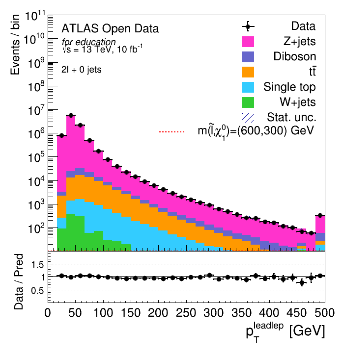
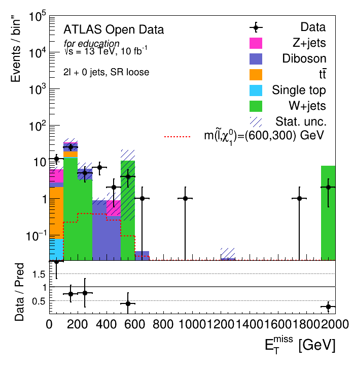
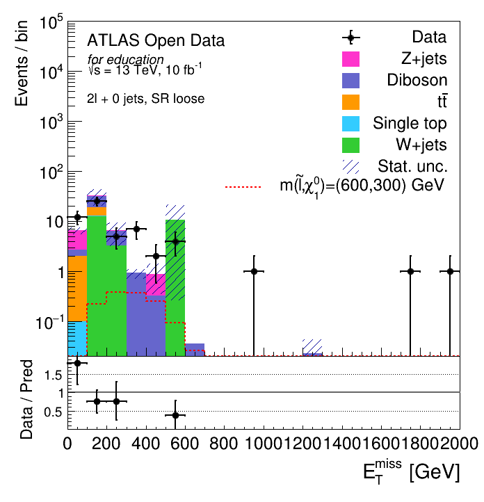
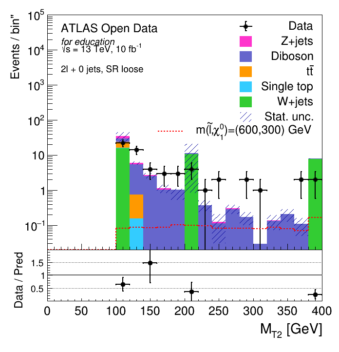
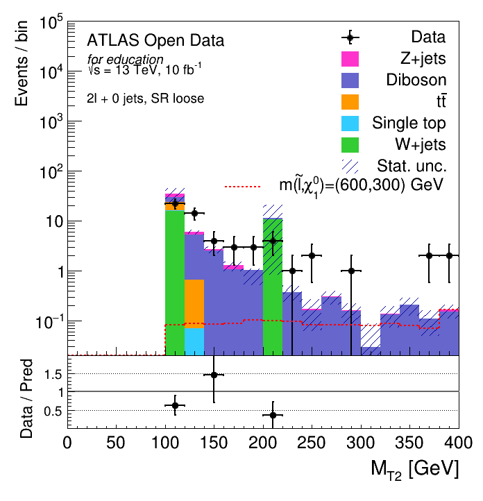
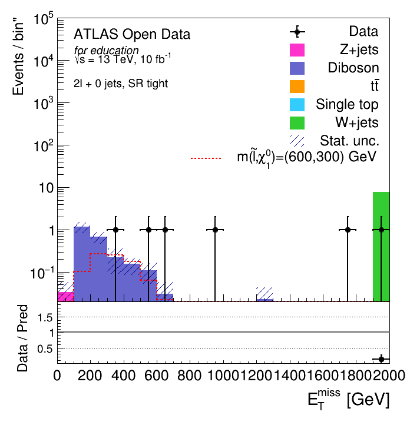
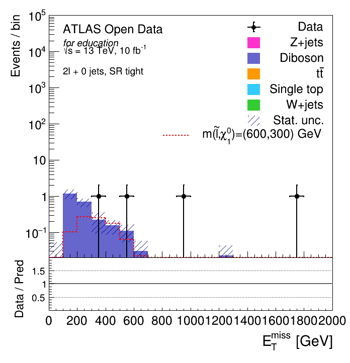
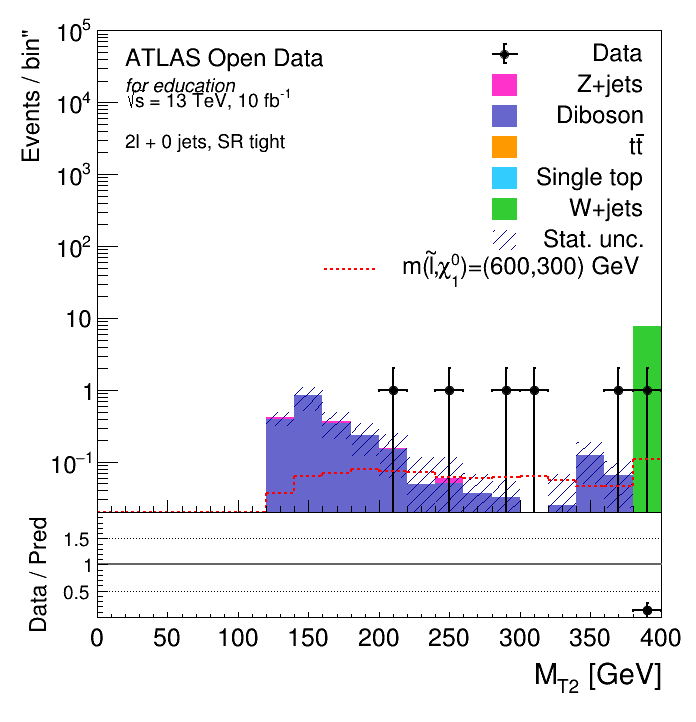
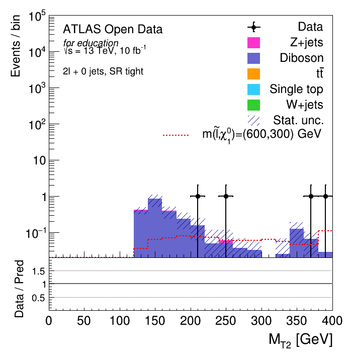

Yields: SFOS/histleadleptPt_SFOS
Data : 9608101.000000 +- 3099.693695
diboson : 23503.130068 +- 24.660543
Z+jets : 9281370.804888 +- 6306.434451
W+jets : 1164.394365 +- 119.724843
single top : 6840.585282 +- 23.092889
ttbar : 70740.177355 +- 83.234983
Total pred. : 9383619.091959 +- 39793519.003243
Yields: hist_leadleptpt_SFOS
Data : 9381935.000000 +- 3062.994450
diboson : 49137.619429 +- 59.786461
Z+jets : 9180181.002632 +- 6258.094855
W+jets : 1046.157106 +- 111.145180
single top : 6303.570967 +- 22.169736
ttbar : 64860.303382 +- 79.805996
Total pred. : 9301528.653516 +- 39186539.383743
Yields: SR2loose/histmt2_SR2_loose
Data : 60.000000 +- 7.745967
diboson : 18.208070 +- 1.561600
Z+jets : 5.306915 +- 1.147370
W+jets : 33.737602 +- 16.234818
single top : 0.948147 +- 0.264183
ttbar : 7.669631 +- 0.842967
Total pred. : 65.870366 +- 268.104760
Yields: hist_mt2_SR_loose
Data : 58.000000 +- 7.615773
diboson : 18.124090 +- 1.561116
Z+jets : 6.005473 +- 1.151651
W+jets : 26.011024 +- 16.234851
single top : 0.860275 +- 0.249141
ttbar : 7.683633 +- 0.844506
Total pred. : 58.684497 +- 268.109019
Yields: SR2tight/histmt2_SR2_tight
Data : 6.000000 +- 2.449490
diboson : 2.388782 +- 0.413511
Z+jets : 0.036021 +- 0.029317
W+jets : 7.747709 +- 0.000000
single top : 0.000000 +- 0.000000
ttbar : 0.000000 +- 0.000000
Total pred. : 10.172512 +- 0.171851
Yields: hist_mt2_SR_tight
Data : 4.000000 +- 2.000000
diboson : 2.442588 +- 0.412767
Z+jets : 0.017389 +- 0.037131
W+jets : 0.000000 +- 0.000000
single top : 0.000000 +- 0.000000
ttbar : 0.000000 +- 0.000000
Total pred. : 2.459977 +- 0.171755








